<!--
  Generated template for the AirSettingModePage page.

  See http://ionicframework.com/docs/components/#navigation for more info on
  Ionic pages and navigation.
-->
<ion-header no-border>
  <ion-navbar transparent>

  </ion-navbar>
</ion-header>

<ion-content>


</ion-content>
<ion-footer>
  <ion-grid class="mode">
    <ion-row>
      <ion-col>
        
        冷风
      </ion-col>
      <ion-col>
        

        暖风
      </ion-col>
      <ion-col>
        0}" (click)="dismiss(2)" />


        地暖
      </ion-col>
    </ion-row>
    <ion-row>
      <ion-col>
        
        暖风&地暖
      </ion-col>
      <ion-col>
        

        除湿
      </ion-col>
      <ion-col>
        0}" (click)="dismiss(5)" />


        通风
      </ion-col>
    </ion-row>
  </ion-grid>
  <div class="dismiss">
    <ion-icon name="arrow-down" (click)="dismiss()"></ion-icon>
  </div>
</ion-footer>